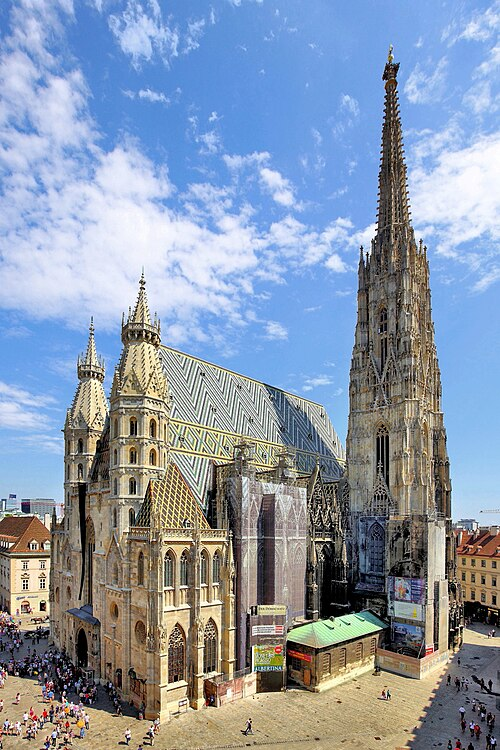
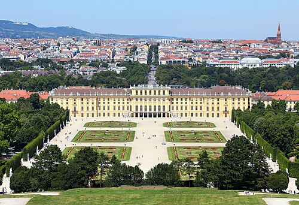
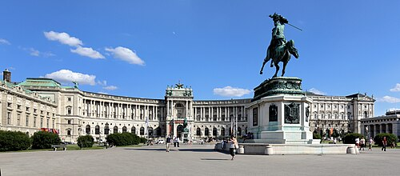

This map shows 20 of the most-searched sights in Vienna as photo spots, ranked by how often people search for them: St. Stephen's Cathedral, Schönbrunn Palace, Hofburg, Belvedere and State Opera lead the list. Every spot has a pin on the subject and a phone icon showing where to stand, with tips for shooting it on your phone: which lens to use, how to frame it, a settings tip and the best time of day. Directions and Navigate buttons take you to the standing point on foot or by public transport. 3 spots are free to view; the full map is for members.
The 3 free photo spots
1St. Stephen's Cathedral

St. Stephen's Cathedral, known locally as the Stephansdom, is the mother church of the Archdiocese of Vienna and the city's most important religious building. The first church on the site was dedicated in 1147. The Gothic building you see today grew mainly from the work started under Duke Rudolf IV in the 14th century. Its multi-coloured tiled roof is one of the best-known sights in Vienna, and the south tower, nicknamed the "Steffl", reaches 136 metres. The cathedral is about 107 metres long. Much of the stonework is dark from centuries of soot, though some areas have been cleaned back to a paler colour. The roof was badly damaged by fire in April 1945 and the cathedral fully reopened in 1952.
It photographs well because the Gothic west façade rises straight out of an open square. That gives you room to step back and fit the whole front, with the patterned roof above it. From the front you can capture the tall tower, the carved doorway and the zigzag roof tiles in one frame. The square is very busy for most of the day, so go early if you want a cleaner shot. If the main view is crowded, try the corner at Stock-im-Eisen-Platz for an angled view with the spire, or Jasomirgottstraße for the entrance framed by a narrow street. The South Tower climb is a paid activity, so check the official site for tower access details before you go.
Where it is: St. Stephen's Cathedral stands on Stephansplatz in the heart of Vienna's old city centre (the Innere Stadt, or 1st district). The square wraps around the cathedral's west front.
Shooting it on your phone
Lens: Start with the ultra-wide (0.5x) to fit the full west façade and roof from close range. Then switch to the default lens (1x) for a more natural look, and use telephoto/zoom (2x-5x, depending on your phone) for the roof tiles and tower details.
Where to stand: Stand in Stephansplatz (in front of the main west entrance). The cathedral's Gothic west façade and tiled roof, framed by the open square. From here you see the Gothic west façade and tiled roof framed by the open square, with the cathedral to the east of you.
Framing: Turn on gridlines and hold the phone upright and level, so the towers don't lean. Leave a little open sky above the roof and some square in front to give a sense of scale. For a different view, try the corner at Stock-im-Eisen-Platz, which shows the spire and façade together, or Jasomirgottstraße, where the narrow street frames the entrance and cuts out much of the crowd.
Settings tip: Tap the brightest part of the façade to focus, then lower the exposure slider slightly so the sky and roof tiles keep their colour. Take the 0.5x shot first, then zoom in for close-ups of the roof.
Best time: Early morning, when the square is quieter and the first light hits the roof tiles. Midday is the busiest time.
2Schönbrunn Palace

Schönbrunn is the Habsburgs' old summer palace, a yellow Baroque building with 1,441 rooms, set in the 13th district of Vienna. It became a World Heritage Site in 1996, together with its gardens. The classic photograph is not taken at the palace door. It is taken from the Gloriette, the colonnaded building on the hill at the end of the garden axis, which has stood there since 1775. From its upper terrace the yellow palace and the formal gardens lie in front of you, with the Vienna skyline behind them. That layered view is what makes the shot work on a phone: lawns and clipped hedges in the foreground, the palace in the middle, the city beyond. The hill is about 60 metres high, which is enough to look down the whole length of the gardens. Guides say the view is best late in the day, while others suggest arriving early to avoid the crowds, so choose whichever suits your day. If you also want a straight-on picture of the building, the Ehrenhof, the courtyard in front of the palace, shows the symmetrical front facade and its central gateway filling the frame. Photography is not allowed inside the state rooms, so both of these pictures are taken outdoors.
Where it is: Schönbrunn Palace is in Hietzing, Vienna's 13th district. The Gloriette stands on the hill at the far end of the palace gardens, to the south of the palace.
Shooting it on your phone
Lens: Start with the default lens (1x), which gives a natural view of the whole garden and palace. If you want to pick the palace out from the skyline behind it, try 2x or 3x on a phone with a telephoto lens. Use the ultra-wide (0.5x) only if you want the terrace's columns or arches in the frame.
Where to stand: Stand at Gloriette (upper terrace, looking back south-northwest down the garden axis toward the palace). The yellow palace and formal gardens in the foreground, with the Vienna skyline behind them. From here, turn round and look back north down the garden axis. The palace is straight ahead of you, with the yellow building and formal gardens in the foreground and the Vienna skyline behind.
Framing: Turn on the gridlines and put the palace on the central vertical line so the garden paths lead the eye towards it. Keep a little of the terrace edge or a column in one corner if you want a sense of height. For a second picture, the Ehrenhof in front of the palace gives a symmetrical, face-on view of the front facade, so keep the phone level and the gateway in the centre.
Settings tip: Tap the palace to focus, then slide the exposure down slightly so the sky keeps its colour and the yellow walls do not wash out. A panorama can capture the full width of the gardens, but move slowly.
Best time: One hour before sunset, or early morning before the crowds arrive.
3Hofburg

The Hofburg was the main palace of the Habsburg dynasty and is still in daily use: since 1946 it has been the official residence and workplace of Austria's president. It is less a single building than a sprawl of wings added over centuries, starting with the oldest parts in the 13th century and finishing with the Neue Burg, built between 1881 and 1913. That mix of styles is why it rewards a slow walk with your phone out.
From the middle of this semicircular square you can look through the central archway at the Michaelertrakt façade and its dome, with the glass-covered Roman excavation in the foreground. Guides often call it the iconic Hofburg shot, and the dome is the most-photographed view of the palace.
If you want something wider and more open, Heldenplatz shows the long Neue Burg façade with an equestrian statue in front. The Burggarten gives a softer view, with the Mozart statue and its treble-clef flower bed in front of the Neue Burg roofline.
The square fills with people and carriages later in the day, so go early if you want a clear frame. Take a few steps sideways to line the dome up in the middle of the arch, and keep the phone level so the verticals stay straight.
Where it is: The Hofburg sits in the centre of Vienna, facing Heldenplatz. Michaelerplatz is the semicircular square at its edge.
Shooting it on your phone
Lens: Start with the default lens (1x) to frame the dome through the central archway. Switch to ultra-wide (0.5x) if you want the whole façade and the excavation glass in one shot. Use telephoto (2x-3x, depending on your phone) for details of the dome and the statues.
Where to stand: Stand in Michaelerplatz (centre of the semicircular square, or the outer edge facing the Michaelertor). The Michaelertrakt façade and its dome framed through the central archway, with the Roman excavation glass in the foreground. In the centre of the semicircular square or at the outer edge facing the Michaelertor. From there you see the Michaelertrakt façade and its dome framed through the central archway, with the Roman excavation glass in the foreground. The middle of the wider palace complex lies to the south of you.
Framing: Switch on gridlines and put the archway in the centre so the dome sits symmetrically inside it. Keep the glass of the excavation along the bottom of the frame to add depth. For a more open view, walk on to Heldenplatz for the Neue Burg with its equestrian statue, or to the Burggarten for the Mozart statue and flower bed in front of the roofline.
Settings tip: Tap the dome to focus, then drag the exposure slider down a little so the sky does not wash out the detail. Hold the phone level to keep the vertical lines straight, and use the 0.5x lens only when you need the width, as it can stretch the edges of the frame.
Best time: Before 8am, when the square is emptiest. Later it fills with people and carriages.
17 more spots for members
These spots are on the map as grey numbered pins. Where to stand, the phone tips, photos and directions for them come with Explorer membership.
- 4Belvedere · members
- 5Vienna State Opera · members
- 6Karlskirche · members
- 7Albertina · members
- 8Kunsthistorisches Museum · members
- 9Naschmarkt · members
- 10Graben · members
- 11Hundertwasserhaus · members
- 12Musikverein · members
- 13Votive Church · members
- 14Vienna City Hall · members
- 15Austrian Parliament Building · members
- 16Mozarthaus Vienna · members
- 17Burgtheater · members
- 18Volksoper · members
- 19MuseumsQuartier · members
- 20Wiener Riesenrad · members
Get every spot with Explorer membership
Explorer opens every spot on every map in the library: where to stand, how to frame it on your phone and how to get there, plus the Xdatrys Maps app with maps saved on your phone for use without signal. $9.99 a month or $59.99 a year; cancel any time.
Join Explorer Compare free and Explorer
Not ready to join?
Get Pocket Lens, our free daily smartphone travel photography newsletter.
Free, and you can unsubscribe at any time. If the form does not show, sign up on our newsletter page.
Questions
What are the top photo spots in Vienna?
The first three on this map are St. Stephen's Cathedral, Schönbrunn Palace and Hofburg. They are ranked by how often people search for them. The full map has 20.
Where should I stand to photograph St. Stephen's Cathedral?
Stand in Stephansplatz (in front of the main west entrance). Start with the ultra-wide (0.5x) to fit the full west façade and roof from close range.
When is the best time to photograph Schönbrunn Palace?
One hour before sunset, or early morning before the crowds arrive.
How do I get to the Hofburg?
The map lists no public transport stop for this spot, so walk from the centre of Vienna's old town to Michaelerplatz.
Credits
Map data © OpenStreetMap contributors (ODbL); base map built with Protomaps from OpenStreetMap data. Photos from Wikimedia Commons, credited under each photo with their licence. Background reading for the free spots: St. Stephen's Cathedral, Vienna, Schönbrunn Palace, Hofburg (Wikipedia, CC BY-SA). Access rules and opening times change: check before you go.